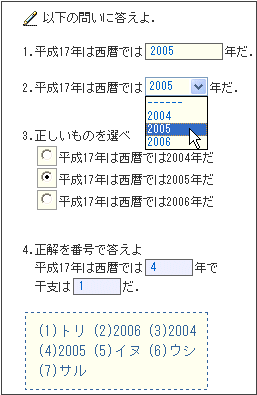

|
【簡単な記述例】
01: (#g=pencilIcon.gif) 以下の問いに答えよ．
02: {@10/} [@5/]
03: 1.平成17年は西暦では!{2005/}年だ．
04:
05: 2.平成17年は西暦では![2004,*2005,2006/]年だ．
06:
07:
08: 3.正しいものを選べ [@20/]
09: #[平成17年は西暦では2004年だ/]
10: #[*平成17年は西暦では2005年だ/]
11: #[平成17年は西暦では2006年だ/]
12:
13:
14: 4.正解を番号で答えよ [@10/]
15: 平成17年は西暦では![2005/]年で
16: 干支は![トリ/]だ．
17: [&2004,2006,イヌ，サル，ウシ/]
18: [+ (3) /]
|
|
 |
 ＥＰＭＬ(Examination Paper Markup Language)の書き方
ＥＰＭＬ(Examination Paper Markup Language)の書き方
 簡単な例示
簡単な例示
 問題の書き分け
問題の書き分け
 配点
配点
 制限時間
制限時間